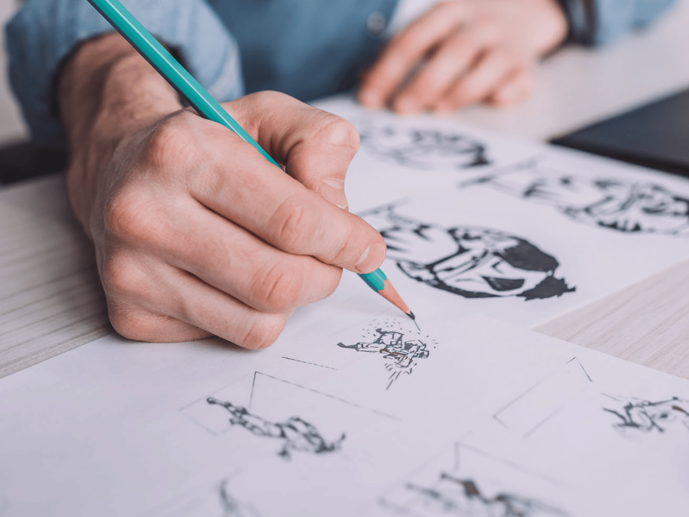

Drawing is a visual art that uses an instrument to mark paper or another two-dimensional surface. The instrument might be pencils, crayons, pens with inks, brushes with paints, or combinations of these, and in more modern times, computer styluses with graphics tablets.
I prefer using normal pencils with paper because i am better at using them over other styles, such as colour pencils
